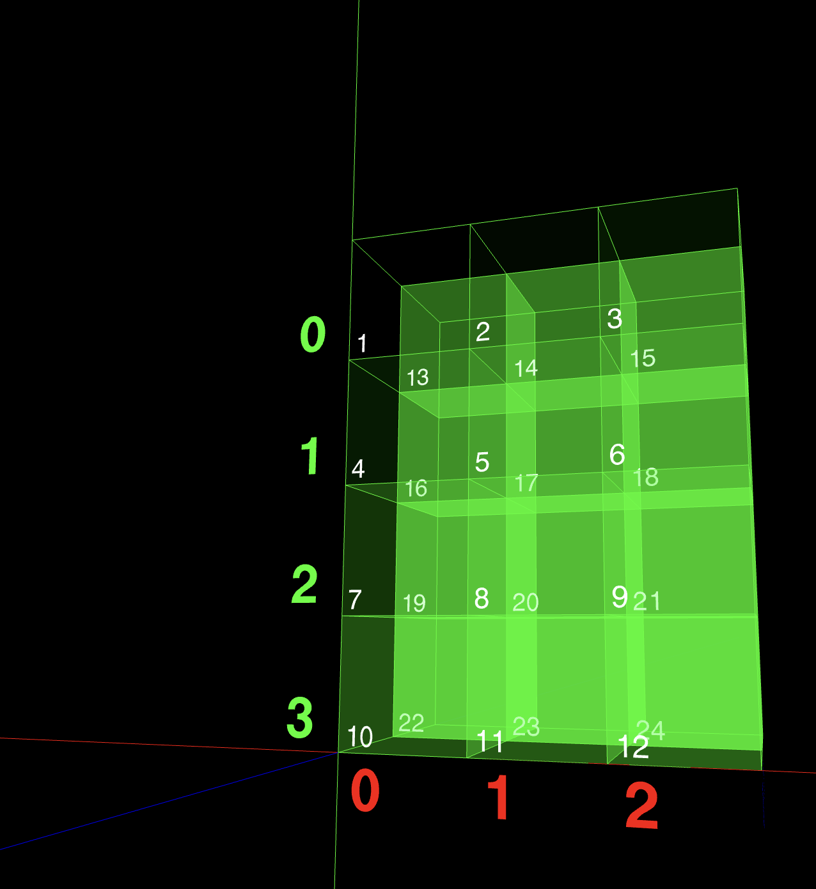

In deep learning, it’s important to visualize a matrix and how it is represented in a dimension space because the operations that we perform on those matrix becomes very much intuitive afterwards.
Visualizing two dimensional matrix.
This has to be the most intuitive visualization.
[ [12, 63, 10, 42, 70, 31, 34, 8, 34, 5],
[10, 97, 100, 39, 64, 25, 86, 22, 31, 25],
[28, 44, 82, 61, 70, 94, 22, 88, 89, 56] ]
We can simply imagine rows are some examples and columns as those examples’ features.
Visualizing three dimensional matrix.
let’s imagine we have a matrix M with the values
M =
[
[
[1, 2, 3],
[4, 5, 6],
[7, 8, 9],
[10, 11, 12]
],
[
[13, 14, 15],
[16, 17, 18],
[19, 20, 21],
[22, 23, 24]
]
]
it is of dimension (2,4,3). How do we visualize it? The key to visualizing a three dimensional matrix is to image it like a two dimensional matrix but only that it’s first dimension is stacked behind one after another.
for instance, for the same matrix image it like it is (4,3) matrix but two of these are stacked behind one after another.
let’s understand it using an image.
 as you can see from this size of the view we can mostly see its last two dimensions i.e (4,3).
Let’s take another view.

as you can see that 2 examples are stacked behind one another.
To visualize it in 3D you can take visit this website https://array-3d-viz.vercel.app